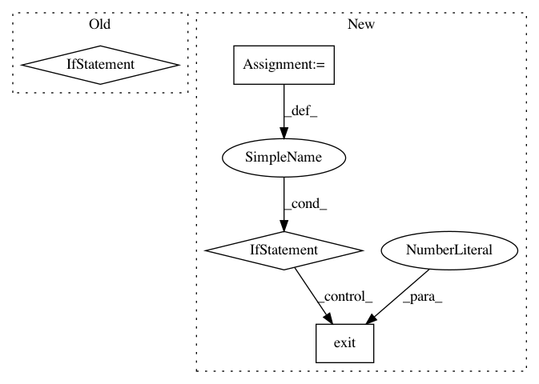

fdeeaff5e452e257bf3a3dd76e25c81304cc4c98,mmdnn/conversion/examples/tensorflow/vis_meta.py,,_main,#,14
Before Change
kill PID
if len(sys.argv) != 3:
raise ValueError("Usage: python vis_meta.py /path/to/model.meta /path/to/log/directory")
// load file
visualize(sys.argv[1], sys.argv[2])
os.system("tensorboard --logdir=" + sys.argv[2])
After Change
print("The checkpoint meta file does not exist.")
exit(1)
if not os.path.isdir(args.logdir):
print("The log directory does not exist.")
exit(1)
// Load file
visualize(args.ckpt, args.logdir)
// Run TensorBoard
cmd = "tensorboard --logdir={} {}".format(
In pattern: SUPERPATTERN
Frequency: 3
Non-data size: 4
Instances
Project Name: Microsoft/MMdnn
Commit Name: fdeeaff5e452e257bf3a3dd76e25c81304cc4c98
Time: 2020-03-15
Author: linmajia@users.noreply.github.com
File Name: mmdnn/conversion/examples/tensorflow/vis_meta.py
Class Name:
Method Name: _main
Project Name: aertslab/pySCENIC
Commit Name: 0e6804ca93a4f76300134a126d5942114b71901c
Time: 2018-12-14
Author: vandesande.bram@gmail.com
File Name: src/pyscenic/cli/pyscenic.py
Class Name:
Method Name: prune_targets_command
Project Name: akkana/scripts
Commit Name: cb38a31627f152c22fb9e474c31b34da588e1134
Time: 2020-07-26
Author: akkana@shallowsky.com
File Name: starstack.py
Class Name:
Method Name: